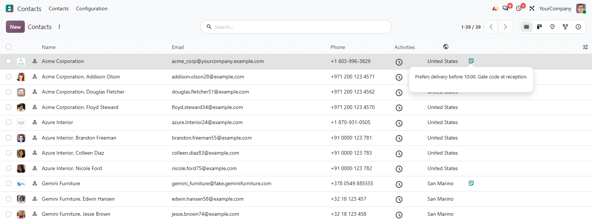

Field widgets, view options and Python helpers that a module declares as a dependency, plus a few fixes to the stock web client. On its own it adds a quick-create switch and a Reports entry in the debug menu.
A selection shown as icons, a long note behind one icon, and column headers that are symbols instead of labels.
no_open on one2many and many2many lists, and prettify for JSON fields.
The domain field stops warning about domains it evaluates fine, and the tour pointer stays visible over dialogs.

Each one is a widget name, an option or an attribute in a view. Nothing appears in a view until a module asks for it.
Each value maps to an icon, with the label as its tooltip. A status column shrinks to the width of one symbol.
A long note shows as one icon in the row. A click opens the full text in a popover you can select and copy.
An icon attribute on a list field replaces the header label, and the field tooltip stays.
A module setting shows a checkbox when the add-on is on disk, and a store link with an Add-on badge when it is not.
One setting stops many2one fields creating a record from a typed name. A field can still opt back in.
A blocking progress bar with a time estimate, and a client action that runs several actions in a row.
Add muk_web_utils to the manifest's depends. The widgets and options then work in any view, and the Python helpers are plain imports.
<field
name="state" widget="selection_icons"
options="{'icons': {'done': 'check'}}"
/>
<field name="comment" widget="text_icon"/>
from odoo.addons.muk_web_utils.tools import encoder json.dumps(partner, cls=encoder.RecordEncoder) # [[7, "Azure Interior"]]
<field name="line_ids" widget="one2many" options="{'no_open': 1}"/>
<field name="payload" widget="json" options="{'prettify': 1}"/>
<field name="country_id" icon="public"/>
What you get for free, and what has to be paid work.
Issues and merge requests are welcome on the public repository. They are read — but no response time is promised.
A widget built for your views, or a fix on a deadline, is paid work — quoted up front. Write to sale@mukit.at.
LGPL-3. Use it, change it, ship it inside your own work — no licence key, no database count.
Modules written for your process, on your Odoo version.
Odoo joined up with the systems you already run.
Hosting, deployment and upgrades you do not have to watch.
Your team taught the parts of Odoo they actually use.
An agreement, so an answer does not depend on who is free.
Odoo.sh or on-premise, Community or Enterprise.
Settings › General Settings › Permissions, in debug mode, for the quick-create switch.
Depends on web_tour and base_setup, nothing external.
A widget, an option or an import in your own module.
It stores one setting, and an upgrade keeps it.
MuK IT GmbH, Vienna. Author and maintainer.
Tell us what the view should show, and we will tell you whether it is an option, a widget or a module. MuK IT — Austrian Odoo partner, Vienna.